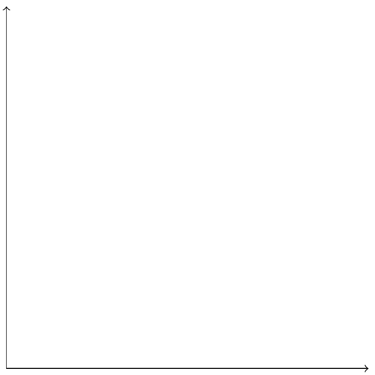
11 TikZ 入门
有一些示意图是用来表达数据探索的思路的，而不是直接探索数据的工具。比如象限图、甘特图、思维导图、网络图等，可以用 TikZ 绘制这类图形来阐述分析维度、思路、结构等。当然，绘制这类示意图不仅限于 TikZ，还有很多其它工具，如 LaTeX 社区的 PSTricks，JavaScripts 社区的 Mermaid，软件 Graphviz 等。
11.1 standalone 宏包
最常见的 LaTeX 文档类有 article、report、beamer、book，分别对应文章、报告、演示和书籍。有的宏包在此基础上扩展功能，比如 ctex 宏包提供中文支持，有四个文档类 ctexart、 ctexrep 、ctexbeamer 和 ctexbook 与之对应起来。standalone 宏包提供 standalone 文类主要用于绘制独立的图片，默认情况下，文档四周多余的空白部分会被裁剪掉。在 LaTeX 环境中，推荐使用 TikZ 来绘图。standalone 文类可与 tikz 宏包一起使用，生成一张张由 TikZ 代码绘制的独立图片。下面举个简单的例子，用 TikZ 绘制两个坐标轴。
\documentclass[tikz,border=1mm]{standalone}
\begin{document}
\begin{tikzpicture}
\draw[<->] (6,0) -- (0,0) node[left]{O} -- (0,6);
\end{tikzpicture}
\end{document}standalone 文类启用 tikz 选项来绘图，选项 border=1mm 表示图片四周的边空保留 1 毫米，文档内容放在 document 环境里，TikZ 绘图代码放在 tikzpicture 环境中，命令 \draw 负责绘制具体的图形，用 XeLaTeX 编译，效果如 图 11.1 所示。
standalone 文类有很多选项，下面介绍 4 个选项的常用内容。
class选项指定文类环境，默认值为article，表示在 article 文类中绘图。其它选项还有beamer，表示在演示环境中绘图。在不同的文类中，图片渲染出来的效果不同。tikz=true|false选项是否启用 TikZ 绘图，默认值是false。当显式地在 standalone 文类中启用tikz选项，就表示用 TikZ 绘图，将自动加载 tikz 宏包。与之类似的选项pstricks=true|false，表示是否启用 PSTricks 绘图，PSTricks 是LaTeX 社区中一套语法不同于 TikZ 的绘图工具。crop=true|false选项是否裁剪变空，默认值是true，表示绘图区域以外的部分都裁剪掉。与之相关的另一个选项是border，可以更加精细地控制图片四周的各个边空。border选项指定边空大小，默认值是 0，表示无边空。当crop=true时，再指定border选项，比如border=1mm表示图片四周的边空保留 1 毫米。图片四周的边空大小可以按照左、下、右、上的顺序指定，比如border={5mm 6mm 0mm -2mm}表示图片左边空 5 毫米、下边空 6 毫米、右边空 0 毫米、上边空负 2 毫米。
standalone 文类是支持 PSTricks 绘图的，下面在直角坐标系中绘制一个带阴影效果的圆，示例代码如下：
\documentclass[pstricks,border={5mm 6mm 0mm -2mm}]{standalone}
\usepackage{pst-plot}
\begin{document}
\psset{xunit=0.15in, yunit=0.15in}
\begin{pspicture}(0,0)(11,11)
\psaxes[Dx=4,Dy=4, subticks=4]{->}(0,0)(0,0)(10,10)[$x$,0][$y$,0]
\pscircle[runit=0.15in, fillcolor=orange!50, fillstyle=solid,shadow=true](5,5){3}
\end{pspicture}
\end{document}standalone 文类的选项 pstricks 表示启用 PSTricks 绘图环境，加载 pst-plot 宏包提供额外的命令，PSTricks 是基于 PostScript 语言的，每一个绘图命令都是 \ps 开头的，比如 \psset 、\psaxes、\pscircle 等。\begin{pspicture} 和 \end{pspicture} 之间是 PSTricks 绘图代码，\begin{pspicture} 之后的 (0,0)(11,11) 是左下和右上角两个坐标，定义了一个绘图区域。和 TikZ 绘图代码一样，也用 XeLaTeX 编译，效果如 图 11.2 所示。
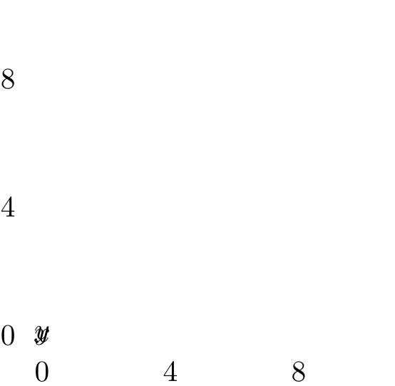
可以在 Quarto 和 R Markdown 文档中插入 PSTricks 绘图代码，使用 knitr 包的 tikz 引擎绘图。只要修改模版文件 tikz2pdf.tex ，移除一行 \usetikzlibrary{matrix} ，不再加载 tikz 宏包及其 matrix 库。TIKZ_CLASSOPTION 不再仅限于 TikZ ，而是 standalone 文类的选项，相应地，EXTRA_TIKZ_PREAMBLE_CODE 变成一般的 LaTeX 文档的导言区，TIKZ_CODE 可以是 PSTricks 代码。新的模版文件 tikz2pdf.tex 如下：
\documentclass[
%% TIKZ_CLASSOPTION %%
]{standalone}
%% EXTRA_TIKZ_PREAMBLE_CODE %%
\begin{document}
%% TIKZ_CODE %%
\end{document}上 图 11.2 即是由 knitr 包的 tikz 引擎渲染出来的。在代码块选项 engine-opts 中，传递一个列表，分别包含 classoption（standalone 文类选项）、 extra.preamble（导言区）、 template （TikZ 模版文件）三块内容。生成 图 11.2 的 engine-opts 设置如下：
list(
classoption = "pstricks,border={5mm 6mm 0mm -2mm}",
extra.preamble = "\\usepackage{pst-plot}",
template = "code/tikz2pdf.tex"
)其它选项和更多详细介绍见 standalone 宏包帮助文档。
11.2 PGF 宏包
PGF 宏包提供一套易于学习和使用的绘图语法 TikZ，TikZ 是 TikZ ist kein Zeichenprogramm 的简写，命名有 Linux 哲学意味。下面比较详细的介绍 LaTeX 宏包 PGF 绘制曲线图的过程。
首先，\draw 命令绘制带箭头的坐标轴，坐标轴的范围 \([0,6]\times[0,6]\) 。坐标轴是由线构成的，线有虚线、实线，也有宽度和颜色，虚线还有不同类型，这些都是可以设置的参数，比如将 \draw[<->] 改为 \draw[color=red,<->] ，坐标轴颜色设置为红色。
\begin{tikzpicture}
\draw[<->] (6,0) node[below]{$q$} -- (0,0) node[left]{O} -- (0,6) node[left]{$V(q)$};
\end{tikzpicture}
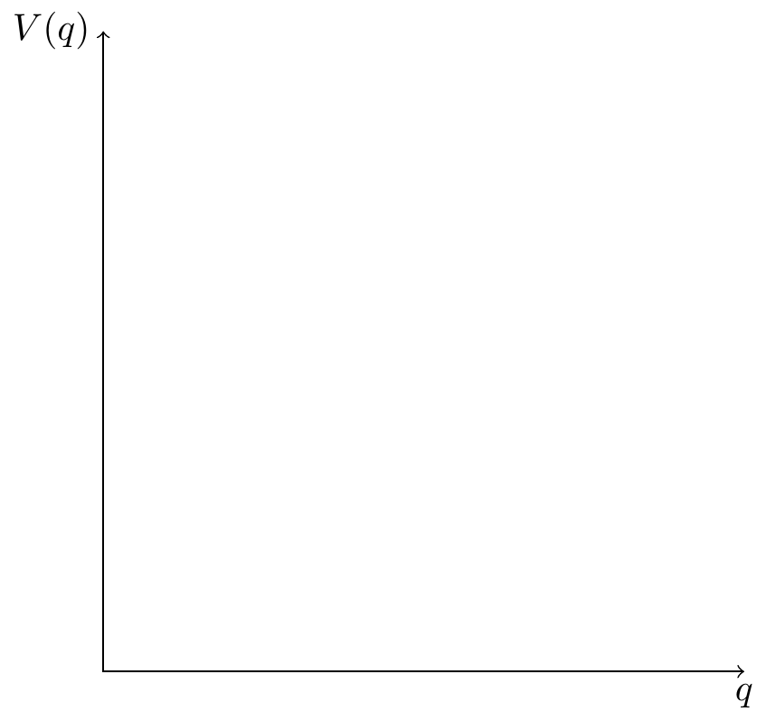
然后，在位置 (6,0) 和 (0,6) 分别添加节点 node[below]{$q$} 和 node[left]{$V(q)$} 。node 表示节点，节点的标签内容在大括号内，标签的位置在中括号内，这里，below 表示在位置 (6,0) 的下方。
\begin{tikzpicture}
\draw[<->] (6,0) node[below]{$q$} -- (0,0) node[left]{O} -- (0,6) node[left]{$V(q)$};
\draw[very thick] (0,0) to [out=90,in=145] (5,4.5);
\end{tikzpicture}
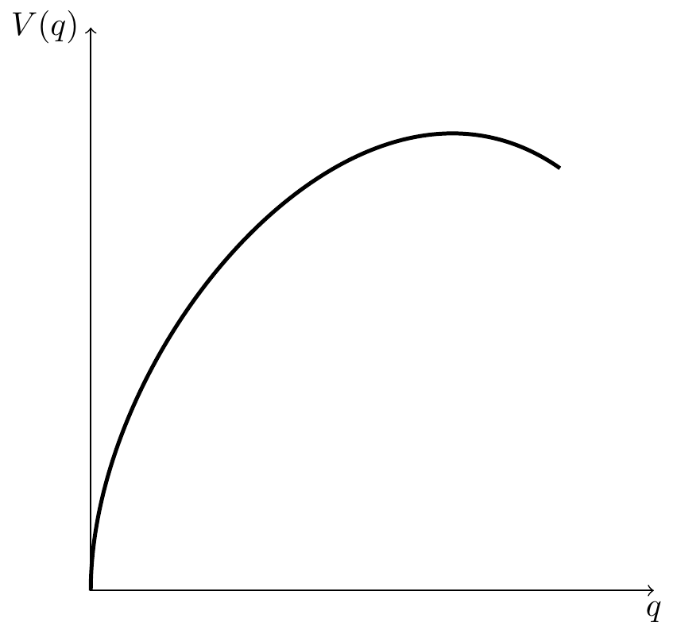
最后，从点 (0,0) 至点 (5,4.5) 绘制一条非常粗的曲线。曲线从点 (0,0) 出去的时候，是以 90 度垂直水平轴的方向出去的，到点 (5,4.5) 是以 145 度方向进入的。角度是按照逆时针方向计算的。线的粗细、方向都是由参数决定的。
在这里，TikZ 是用来绘制示意图的，不需要知道每个命令的每个参数的取值有哪些。关键是知道自己想要画什么，其实，可以用铅笔在纸上以最快的方式绘制草图，了解每个绘图元素，然后查找 PGF 帮助手册，找到对应的命令和参数，将草图工整地誊抄一遍。
11.3 三维图
顾名思义，pgfplots 宏包基于 PGF 的，用它来绘制三维图形是非常方便的。
\documentclass[tikz]{standalone}
\usepackage{pgfplots}
\pgfplotsset{width=7cm,compat=1.18}
\begin{document}
%% TikZ 代码%%
\end{document}首先加载 pgfplots 宏包，设置全局的绘图参数，width=7cm 表示绘图页面宽度，compat=1.18 表示使用 pgfplots 的版本。
\begin{tikzpicture}
\begin{axis}[
hide axis,
colormap/viridis
]
\addplot3[
mesh,
samples=50,
domain=-8:8
]
{ sin(deg(sqrt(x^2+y^2)))/sqrt(x^2+y^2) };
\addlegendentry{$\frac{\sin(r)}{r}$}
\end{axis}
\end{tikzpicture}
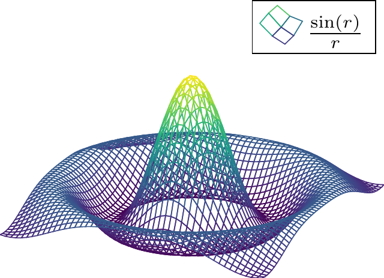
\begin{tikzpicture}
\begin{axis}[
hide axis,
colormap/jet
]
\addplot3[
mesh,
samples=50,
domain=-8:8
]
{ sin(deg(sqrt(x^2+y^2)))/sqrt(x^2+y^2) };
\addlegendentry{$\frac{\sin(r)}{r}$}
\end{axis}
\end{tikzpicture}
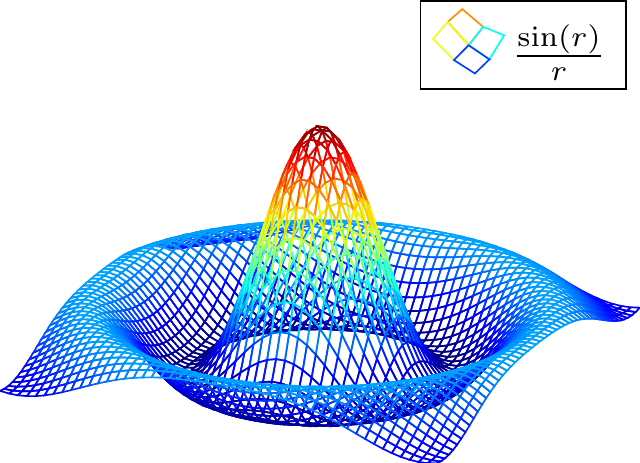
\begin{tikzpicture}
\begin{axis}[
hide axis,
colormap/cool,
colorbar sampled,
domain=-8:8
]
\addplot3[
contour filled={
number=20,
},
]{sin(deg(sqrt(x^2+y^2)))/sqrt(x^2+y^2)};
\addlegendentry{$\frac{\sin(r)}{r}$}
\end{axis}
\end{tikzpicture}
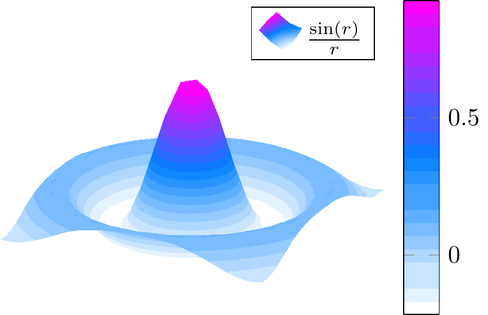
-
\begin{axis}和\end{axis}环境有很多配置选项，参数值[hide axis, colormap/viridis]中hide axis表示隐藏坐标轴，colormap/viridis表示三维图形的调色板采用 viridis 。colormap支持很多不同的调色板，上面列举了两个。其实还可以增加不同的选项，比如添加选项colorbar sampled会生成一个颜色条，还可以添加选项colorbar horizontal来水平放置颜色条。 - 可以在导言区加载
\usetikzlibrary{pgfplots.colorbrewer}导入 ColorBrewer 系列调色板，方便后续绘图时调用。作用与 R 语言中的 RColorBrewer 包类似，调色板名称略有不同，前者PuBu-9对应后者PuBu。 -
\addplot3命令绘制函数sin(deg(sqrt(x^2+y^2)))/sqrt(x^2+y^2)的三维图像，即函数 \(f(x,y)=\frac{\sin(\sqrt{x^2 + y^2})}{\sqrt{x^2 + y^2}}\) 的三维图像。参数值[mesh, samples=50, domain=-8:8]中mesh表示三维图形是网格状，其它可选值还有曲面图surf、填充等值线图contour filled等，samples=50表示网格密度是 50，domain=-8:8表示横纵坐标的范围都是 \([-8,8]\) 。 -
\addlegendentry添加图例，图例标签是 \(\frac{\sin(r)}{r}\) ，颜色会随着调色板变化。
11.4 网络图
绘制网络图用 tikz-network 宏包，也是 PGF 的一个扩展包。图结构是根据顶点和边来定义的，图的复杂程度也可以用顶点和边的规模来衡量。图描述一种非线性的关系，有自己的一套语言，定义顶点 \Vertex 和边 \Edge 的两个命令是最基础的。下面绘制柯尼斯堡七桥问题对应的图。
\documentclass[tikz]{standalone}
\usepackage{tikz-network}
\begin{document}
%% TikZ 代码%%
\end{document}\begin{tikzpicture}
\Vertex[IdAsLabel, x=5, color=gray, size=1, fontsize=\large]{A}
\Vertex[IdAsLabel, x=10, color=gray, size=1, fontsize=\large]{B}
\Vertex[IdAsLabel, x=15, color=gray, size=1, fontsize=\large]{C}
\Vertex[IdAsLabel, x=10, y=6, color=gray, size=1, fontsize=\large]{D}
\Edge[label=2, bend=45, fontscale=2](A)(B)
\Edge[label=6, bend=30, fontscale=2](A)(D)
\Edge[label=3, bend=45, fontscale=2](B)(A)
\Edge[label=5, bend=45, fontscale=2](B)(C)
\Edge[label=4, bend=45, fontscale=2](C)(B)
\Edge[label=7, bend=30, fontscale=2](D)(C)
\Edge[label=1, fontscale=2](D)(B)
\end{tikzpicture}
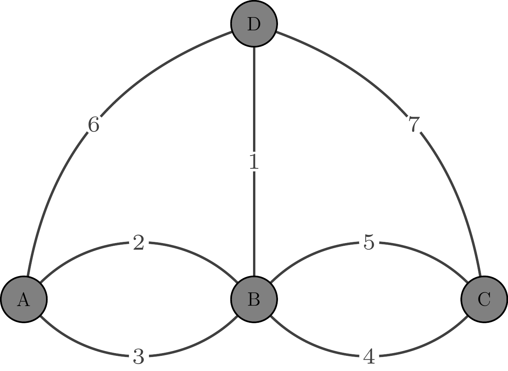
\Vertex命令定义顶点（含标签），参数IdAsLabel表示顶点 ID 作为标签，参数x和y表示坐标位置，参数color表示顶点的填充色，参数size表示顶点的大小，参数fontsize表示标签文本的大小。\Edge命令在已有顶点的基础上定义边，(A)(B)表示从顶点 A 到顶点 B 有一条边，参数label表示边上的标签文本，参数bend表示边的弧度，参数fontscale表示标签文本的大小。
不难看出，无论是顶点还是边，都有颜色、大小、标签等参数，尽管参数名称有所不同。
11.5 思维导图
思维导图是非常常见的一种树状图，用于梳理层次关系。TikZ 绘制思维导图是通过 mindmap 库实现的，它是 PGF 的一个库。如 图 11.10 所示，看着和脑神经网络有某种相似性，所以，有时候，思维导图也叫脑图。
\documentclass[tikz,svgnames]{standalone}
\usepackage[fontset=fandol]{ctex}
\usetikzlibrary{mindmap}
\begin{document}
%% TikZ 代码%%
\end{document}\begin{tikzpicture}[
mindmap, every node/.style=concept, concept color=orange, text=white,
level 1/.append style={level distance=5cm, sibling angle=60, font=\LARGE},
level 2/.append style={level distance=3.5cm, sibling angle=45, font=\large}
]
\node{\huge{\textsf{数据分析}}} [clockwise from=60]
child [concept color=DarkMagenta] {
node {\textit{数据准备}} [clockwise from=120]
child { node {数据对象}}
child { node {数据获取}}
child { node {数据清洗}}
child { node {数据操作}}
}
child [concept color=DarkBlue] {
node {\textit{数据探索}} [clockwise from=30]
child { node {ggplot2 入门}}
child { node {基础图形}}
child { node {统计图形}}
}
child [concept color=Brown] {
node {\textit{数据交流}} [clockwise from=-30]
child { node {交互图形}}
child { node {交互表格}}
child { node {交互应用}}
}
child [concept color=teal] {
node {\textit{统计分析}} [clockwise from=-75]
child { node {统计检验}}
child { node {回归分析}}
child { node {功效分析}}
}
child [concept color=purple] {
node {\textit{数据建模}} [clockwise from=-120]
child { node {网络分析}}
child { node {文本分析}}
child { node {时序分析}}
}
child [concept color=DarkGreen] {
node {\textit{优化建模}} [clockwise from=180]
child { node {统计计算}}
child { node {数值优化}}
child { node {优化问题}}
};
\end{tikzpicture}
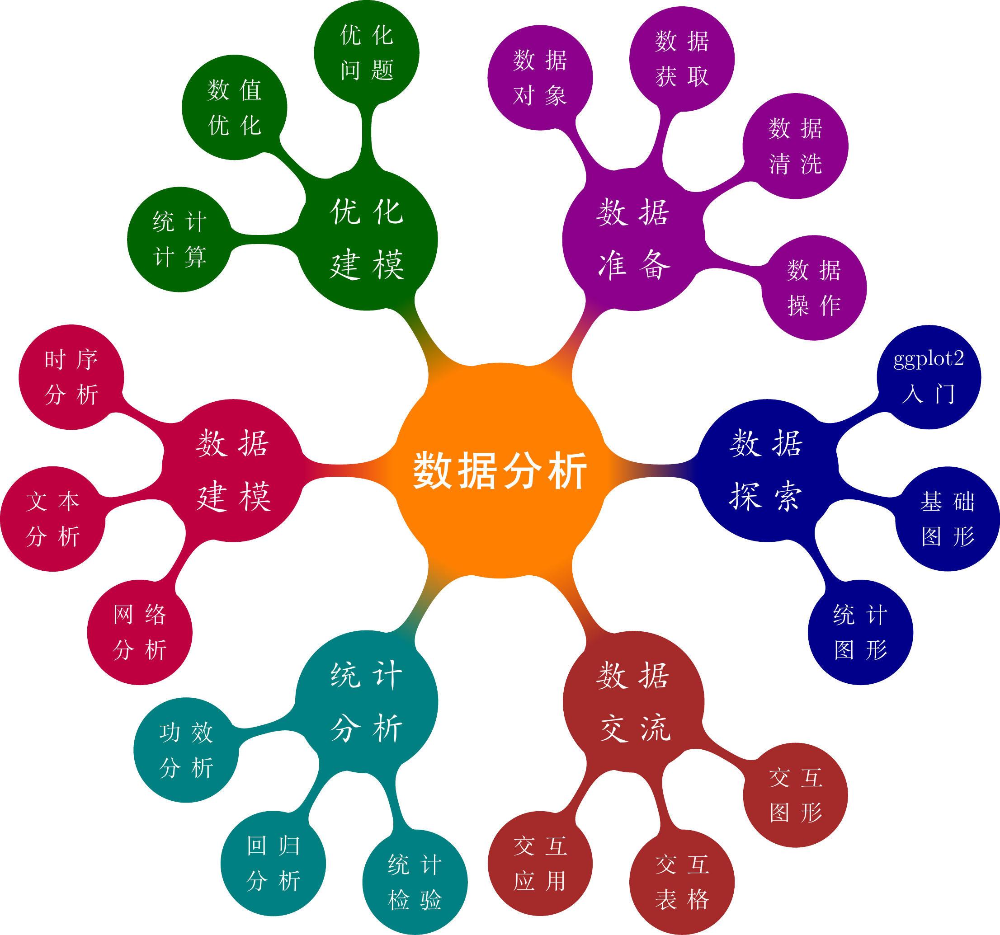
根节点视为一层，则该思维导图有三层。不同的颜色和字体来区分不同的层次或分类，数据分析划分为不同的部分，每个部分有若干章。根节点字体为黑体、第二、三级节点分别为楷体、宋体。
定义根节点，节点的文本设置为黑体，大小设置为 \huge 。由根节点向外辐射生成 6 个子节点，每隔 60 度设置一个子节点。
child [concept color=DarkMagenta] {
node {\textit{数据准备}} [clockwise from=120]
child { node {数据对象}}
child { node {数据获取}}
child { node {数据清洗}}
child { node {数据操作}}
}第一个子节点，颜色为饱和的紫色 DarkMagenta，二级子节点为「数据准备」，三级子节点有 4 个，逆时针 120 度的位置设置第一个三级子节点「数据对象」，然后顺时针往下，依次是「数据获取」、「数据清洗」和「数据操作」。
11.6 SmartArt 图
Office 办公软件中有一个 SmartArt 绘图模块，专门用来绘制各类示意图。LaTeX 宏包 smartdiagram 基于 TikZ 定制了一套风格类似的绘图库。 smartdiagram 宏包的主要绘图命令是 \smartdiagram[参数值] ，设置不同的参数值可以绘制不同的图形，如气泡图 bubble diagram 和描述图 descriptive diagram 等。
11.7 TikZ 与 R
TikZ 绘图的优势有很多，语法简单、易于上手、功能强大、资源丰富、成熟稳定等，可以说几乎是集所有优点于一身。正因如此，knitr 包和 tikzDevice 包将其引入 R 语言社区中。knitr 包的 tikz 引擎是用来编译 TikZ 代码的，默认使用的是 standalone 文类。
R 语言绘图遇到公式时，略显不足，而排版公式是 LaTeX 的优势。正因为有所不足，所以我也不会纠结于工具层面的东西，什么好用用什么！三维 图 11.6 是用 LaTeX 里的优秀绘图工具 TikZ 制作的，细心的读者会发现本书多次用到这个工具。
众所周知，Donald Knuth 十年磨一剑，开发了 TeX 排版系统，就是解决排版数学公式的痛点。如 图 11.13 所示，因图形中包含数学公式和符号，为了获得原汁原味的渲染效果，在使用 Base R 绘图的过程中通过 tikzDevice 包引入了 LaTeX 中的 TikZ 绘图引擎。
opar <- par(mgp = c(2, 0.7, 0), mar = c(4, 3, 4, 1) + 0.1, no.readonly = TRUE)
set.seed(2021)
x <- rnorm(10)
y <- x + rnorm(5, sd = 0.25)
lab <- sample(
x = paste0("$\\mathcal{", LETTERS, "}$"),
size = 10, replace = FALSE
)
model <- lm(y ~ x)
rsq <- summary(model)$r.squared
rsq <- signif(rsq, 4)
plot(x, y,
main = "你好 \\LaTeX!", # 引入 7 号文本字体
sub = "$\\mathcal{N}(x;\\mu,\\Sigma)$",
xlab = "$x$", ylab = "$y$", type = "n"
)
text(x = x, y = y, labels = lab)
abline(model, col = "black")
# 引入 7 号数学字体
mtext(paste("线性模型: $\\mathsf{R}^{2}=", rsq, "$"), line = 0.5)
legend("bottomright",
legend = paste0(
"$y = ", round(coef(model)[2], 3), "x +",
round(coef(model)[1], 3), "$"
),
bty = "n"
)
on.exit(par(opar), add = TRUE)
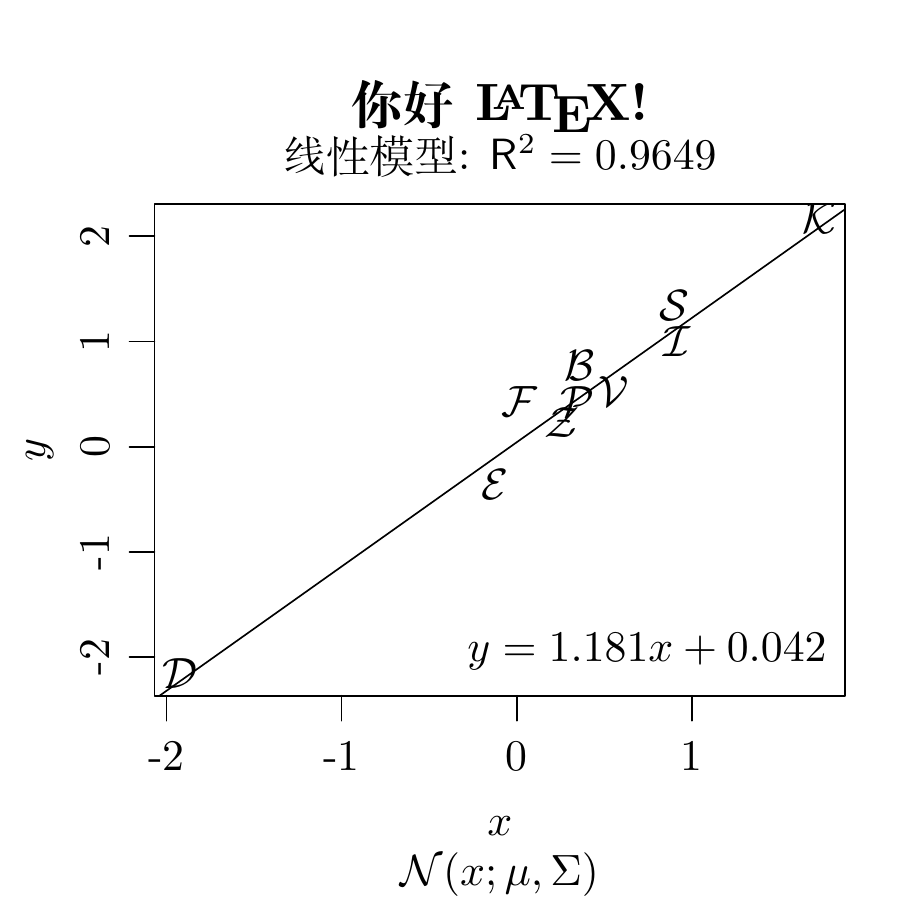
图 11.14 是贝塞尔函数 \(\mathcal{K}_{\kappa}(u)\) 在区间 \((10^{-8}, 10^2)\) 和 \((0, 4)\) 上的图像。其中，图 11.14 (a) 是区间 \((10^{-8}, 10^2)\) 上的贝塞尔函数 \(\mathcal{K}_{\kappa}(u)\)， 图 11.14 (b) 是区间 \((0, 4)\) 上的贝塞尔函数 \(\mathcal{K}_{\kappa}(u)\) 。
x0 <- 2^(-20:10)
nus <- c(2:5, 10, 20)
x <- seq(0, 4, length.out = 501)
plot(x0, x0^-8,
frame.plot = TRUE, # 添加绘图框
log = "xy", # x 和 y 轴都取对数尺度
axes = FALSE, # 去掉坐标轴
xlab = "$u$", ylab = "$\\mathcal{K}_{\\kappa}(u)$", # 设置坐标轴标签
type = "n", # 清除绘图区域的内容
ann = TRUE, # 添加标题 x和y轴标签
panel.first = grid() # 添加背景参考线
)
axis(1,
at = 10^(-8 + 2 * 0:5),
labels = paste0("$\\mathsf{10^{", -8 + 2 * 0:5, "}}$")
)
axis(2,
at = 10^(-8 + 16 * 0:4),
labels = paste0("$\\mathsf{10^{", -8 + 16 * 0:4, "}}$"), las = 1
)
for (i in seq(length(nus))) {
lines(x0, besselK(x0, nu = nus[i]), col = hcl.colors(9)[i], lwd = 2)
}
legend("topright",
legend = paste0("$\\kappa=", rev(nus), "$"),
col = hcl.colors(9, rev = TRUE), lwd = 2, cex = 1
)
x <- seq(0, 4, length.out = 501)
x <- x[x > 0]
plot(x, x,
frame.plot = TRUE, ylim = c(1e+0, 1e+20), log = "y",
xlab = "$u$", ylab = "$\\mathcal{K}_{\\kappa}(u)$",
type = "n", yaxt = "n", ann = TRUE, panel.first = grid()
)
axis(2,
at = c(1e+0, 1e+05, 1e+10, 1e+15, 1e+20),
labels = paste0("$\\mathsf{10^{", 5 * 0:4, "}}$"), las = 1
)
for (i in seq(length(nus))) {
lines(x, besselK(x, nu = nus[i]), col = hcl.colors(9)[i], lwd = 2)
}
legend("topright",
legend = paste0("$\\kappa=", rev(nus), "$"),
col = hcl.colors(9, rev = TRUE), lwd = 2, cex = 1
)
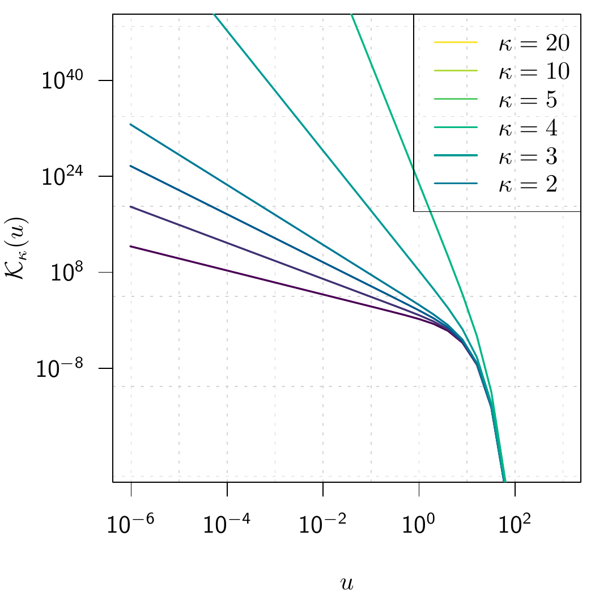
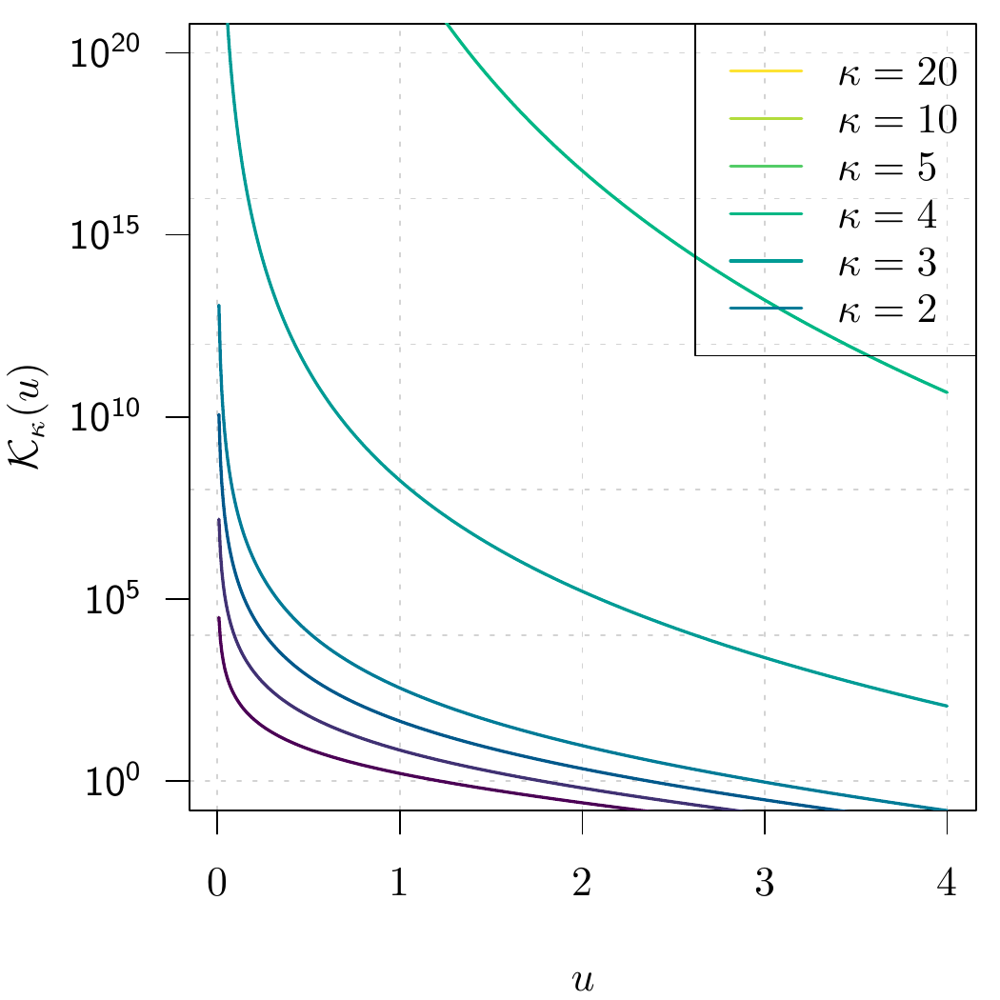